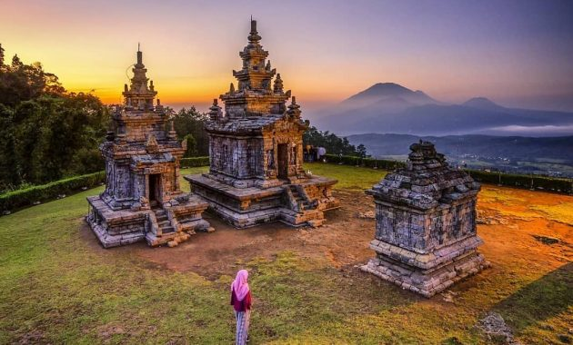

Tentang Destinasi Menarik
Destinasi wisata kuliner yang asyik disemarang
Berita Utama
Candi Gedung Songo

SEMARANG, KOMPAS.com- Salah satu tempat menikmati keindahan matahari terbit di Semarang ialah dari Candi Gedong Songo. Destinasi wisata sejarah yang ada di lereng Gunung Ungaran tersebut menyajikan lanskap matahari terbit di sela-sela candi yang dikelilingi awan dan gunung. Gelap masih mendominasi langit Semarang saat KompasTravel bertolak menuju Candi Gedong Songo, tepat pukul 03.15 WIB, Rabu (28/3/2018). Jalanan yang kosong membuat perjalanan dari pusat Kota Semarang ke Gedong Songo di Kabupaten Semarang hanya memakan waktu 40 menit. Candi Gedong Songo terletak di lereng Gunung Ungaran, Desa Darum, Kelurahan Candi, Kecamatan Bandungan, Kabupaten Semarang. Medan yang ditempuh sudah rapih dan beraspal, walaupun berkelok-kelok dan menanjak. Nama Candi Gedong Songo memiliki arti sembilan bangunan, tetapi secara fisik yang ditemukan sampai saat ini hanya lima candi. Mitos yang berkembang, sisa candi lainnya hanya tersisa bekas reruntuhan atau pondasinya sejak pertama ditemukan. Di papan informasi, gugusan candi ini dibangun sekitar abad ke-8 masehi. Ditemukan pertama kali tahun 1740 oleh seorang arkeolog Belanda bernama Loten, dan kembali diteliti pada masa Raffles tahun 1804 baca selengkapnya.
.
Grand Maerokoco

Grand Maerokoco merupakan salah destinasi wisata yang menarik dan patut di kunjungi di semarang tempatnya berada kurang lebih lima kilometer dari Tugu Muda Semarang. Disana kalian bisa melihat macam-macam Anjungan rumah adat jawa yang berasal dari 35 Kab yang ada di Propinsi jawa Tengah, oleh karena itu Grand Maerokoco juga banyak di sebut Miniaturnya Jawa Tengah.
Lebih lengkap
Sekilas Info
Cuaca seminggu ini di Semarang terpantau hujan deras, siapkan payung anda dan jaga kesehatan
Artikel lainnya yang terkait